B.10 | Flow Path Modification with the JPDEM Channel Cutter
Overview (Tutorial B.10 - JPDEM Channel Cutter)
Digital elevation models (DEMs) need to be flat-processed using the JPDEM tool before VELMA can accurately simulate flow paths within a watershed. However, JPDEM's flat-processing procedure cannot account for obscuring landscape features such as bridges or buried streams, leading to potentially large errors in estimating actual flow paths.
Therefore, JPDEM includes a procedure that allows users to make elevation adjustments (a.k.a. "dredging" or "cutting") to reroute specified channels within a DEM. Performing channel cutting prior to flat-processing a DEM can improve the fidelity of flow paths in the subsequent flat- processed map relative to the actual terrain it represents.
JPDEM's "channel cutter" can also be used to re-engineer existing DEM flow paths, for example, to support "what if" green infrastructure (GI) and low impact development (LID) simulations. Or, VELMA users might want to explore how rerouting stormwater from established gray infrastructure flow paths (e.g., streets equipped with storm drains) to proposed rain gardens, detention ponds, engineered wetlands, etc.
This document describes the basics of using JPDEM's channel cutter to accomplish such objectives.
The Channel Cutter mechanism reduces the elevations of specified sequences of cells ("channel cells") relative to their adjacent cells ("bank cells"). The elevation reduction is performed so that the channel cells guaranty a continuous "step down" from the upper most channel cell ("headwater cell") to the edge of the DEM map grid.
The Channel Cutter mechanism requires a channel guide map that defines the channel cells it should adjust, including a built-in coded sequence representing the order of adjustment to be made on the DEM map data. Producing the channel guide map comprises most of the effort for the overall task of modifying ("dredging") a map's channels (flow paths). Appendix A????? provides instructions for using ArcMap and associated utility tools for establishing a channel guide map and performing the dredging process.
Important Note: JPDEM's "Standard" and "Alternate" flat-processing methods should NOT be used for flat-processing DEMs when the Channel Cutter mechanism is being used. Reason is these two methods both raise and lower cells during flat-processing. The other methods ("Experimental" and "Enhanced Experimental") only raise cell elevations during flat-processing adjustments. Since the Channel Cutter mechanism enforces flow to the edge of the map, these cells are guaranteed correct, therefore are not modified when using the "Experimental" and "Enhanced Experimental"
methods. That behavior cannot be guaranteed when using the "Standard" and "Alternate" flat-processing methods.
Using the Channel Cutter
This document assumes that you already have a raw DEM (i.e. a DEM that has not been flat-processed) that you wish to dredge (i.e. adjust channel cell elevations for) and a correctly-formatted stream channel sequential map to guide the channel cutter.
Step 1: Load the DEM Map
Start JPDEM and load the un-flat-processed DEM file, via the File -> "Load Map File Data" -> "Load as DEM File" menu item:
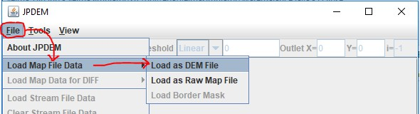Step 2: Load the Channel/Stream Guide Map
Load the sequential guide map via the File -> "Load Stream File Data"
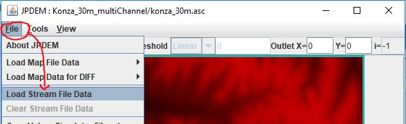After the sequential guide (a.k.a. Stream File Data) map has been loaded, JPDEM will display the cell from the guide map in green:
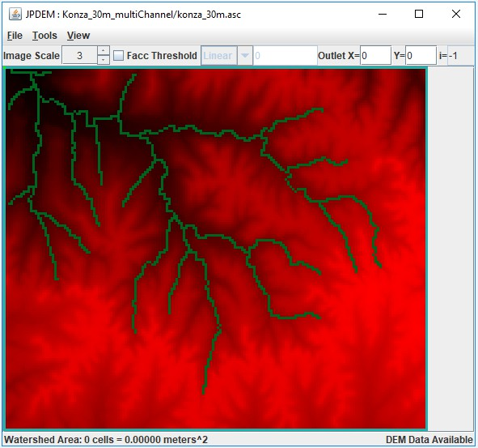If you find that you have loaded the wrong channel/stream guide data, click the File -> "Clear Stream File Data", and then "File -> "Load Stream File Data" to load the correct file.
Step 3: Run the Channel Cutter
Perform the actual channel cutting by clicking the Tools -> "Adjust DEM via Sequential Stream Guide Data" menu item.
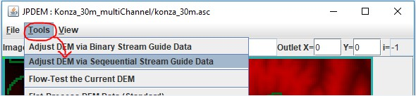(The Tools -> "Adjust DEM via Binary Stream Guide Data" - is a different, mechanism that is still under development. If you click it by mistake, close JPDEM, then restart it and begin again with Step 1.)
When you click "Adjust DEM via Sequential Stream Guide Data", the following dialog opens:
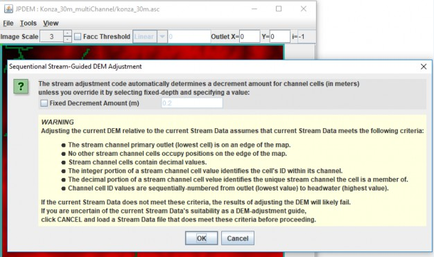The "WARNING" section provides a condensed overview of the guide map format specified in Appendix A of this document.
The "Decrement Amount" mentioned at the top of the dialog is the amount that channel cells are lowered relative to their adjacent bank cells. The value is in meters, and is automatically calculated unless you click the "Fixed Decrement Amount" and specify a value.
Unless you need a very large difference between channel and bank elevations, leave the Fixed Decrement option unchecked, and simply click the OK button at the bottom of the dialog.
Doing so will start the channel cutter mechanism.
The following message indicates that the channel cutter has completed its work:
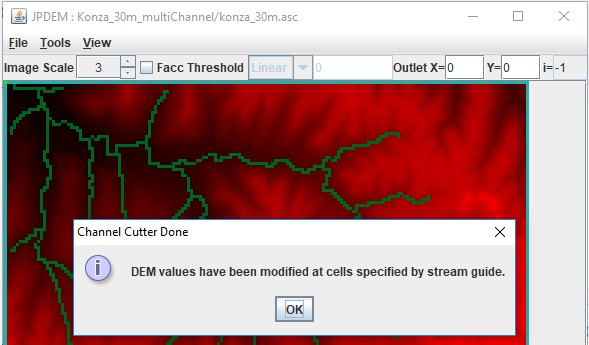Click the OK button to dismiss it.
When the channel cutter encounters an error, it terminates with the following type of message dialog:
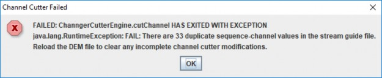Step 4: Check the Channel Cutter Runtime Messages
As it processes the channels, the cutter echoes a status report for each channel ID it encounters to stdout of the console JPDEM was started from. (Note, if you started JDPEM by double-clicking its application icon, the status report messages are suppressed.)
Here is an extract from channel cutter output for a single channel's status (the [...] indicate long text lines that were truncated for this document.)
Sequenced Channel #14 : 10024 9849 9674 9675 9500 9501 9326 9151 9152 8977 8802 [...]minDecrement=2.000000000066393E-4 bankDecrement=1.026900000000012 maxDecrement=[...] Channel Cells: 10024 9849 9674 9675 9500 9501 9326 9151 9152 8977 [...]Channel Cell Elevations: 369.2801 368.8617 368.44329999999997 368.0249 [...]Problem Channel Cells: -none-Bank Cells: 10025 10200 10199 10198 10023 9848 9850 9850 10025 10023 [...]Bank Cell Elevations: 372.6165 376.9927 373.6152 375.6302 375.5685 375.7058 [...]Problem Bank Cells: -none-
Note that the above channel processed cleanly: the "Problem Channel" and "Problem Bank" lines report "-none-". If either of the "Problem" report lines listed cell indices, that would indicate the channel cutter encountered some ambiguity at those cells. Careful review of the guide map data must then be performed: it may be that the sequencing of the channel is incorrect.
The cutter will fail - and lists to the stdout console - when it encounters one or more duplicate sequence.channel ID values in a single guide map. Here is short example of what the duplicate error message looks like:
At 2018-10-05 14:59:02: Starting Sequential Stream Guide Processor ... Cutter depth: Automatic DetectionDuplicate: iSequence=15 iChannel=9Duplicate: iSequence=2 iChannel=2Duplicate: iSequence=141 iChannel=1Duplicate: iSequence=197 iChannel=1FAILED: ChanngerCutterEngine.cutChannel HAS EXITED WITH EXCEPTIONjava.lang.RuntimeException: FAIL: There are 4 duplicate sequence-channel values in the stream guide file.Reload the DEM file to clear any incomplete channel cutter modifications.
Step 5: Flat-Process the Channel-Cut Map
You can save the flat-processed channel-cut DEM map immediately after running the cutter, and we recommend you do this, but we also recommend you flat-process the DEM immediately after successfully channel-cutting it. The results of the channel-cutter mechanism are most compatible with the 3 "Experimental …" flat-processing algorithms; choose one of those and run it on the just-cut DEM. After the flat-processor is done, save the resulting map to a file (File -> "Save DEM Data As" -> "ASCII Grid"). You may also use the "Facc Threshold" rendering feature to evaluate how well the guide map's cells correspond to high-flow cells of the flat-processed DEM (see Appendix B for details).
Appendix A:
Channel Cutter Sequential Guide Map Format
For some watersheds, a VELMA user may desire to increase the processing time required to flat process their area of interest or may need to control the representation of the VELMA simulation flow path.
Both goals can be met using JPDEM's advanced feature, the Dredger.
The current state of the dredging tool is beyond "Beta". Though, currently this method is not as user friendly as JPDEM itself. As of VELMA 2.1, the user must use GIS software to prepare spatial data for an intermediate Java-based tool referred to as the Channel Cutter method (a.k.a Dredger), or by Java file referred to as "JpdemStreamDredgePrepper.jar".
A channel cutter sequential guide map is an ESRI Grid ASCII (.asc) map file with the same dimensions as the DEM file it is intended to overlay. The contents of the file specify a collection of one or more channels, and the sequence of cells within each channel.
The following cell value details are generated for the user by the JpdemStreamDredgePrepper.jar tool. Understanding the end goal assists with trouble shooting the final stream dredge map provided to JPDEM. Each cell data value within the file must be either:
- The DEM file's nodata_value (usually -9999).
- Cells with the nodata_value are ignored by the channel cutter mechanism.
- A decimal number signifying that cell's stream flow sequence and channel ID numbers.
- The whole number portion (left side of decimal) of the number is the cell's stream flow sequence number within the channel. First stream cell (stream mouth) is always 1 and each flowing cell is a greater number than touching downstream number. Numbers in the sequence can be skipped.
- The mantissa or cents portion (right side of decimal) of the number is the stream ID value for each channel that cell is a member. The ranking of each stream channel value dictates the hierarchy of dredging. A stream value of 1 has highest priority. Any stream cell of lower priority is dredged first with a higher priority being dredged later. This allows for proper dredging at stream confluences. The stream that terminates at the confluence should be of lower stream value priority, meaning a larger stream number.
The channel cutter mechanism is inelastic and cannot recover from map data errors. In addition to the above, the following requirements must be met:
- It is an error for the same sequenceID.channelID number value to occur more than once in a single map file.
- A channel's sequence ID values must increase (lowest to highest) from its outlet to its "headwater" cell.
- A channel's outlet cell must either terminate at the edge of the DEM grid, or adjacent to a cell of a different channel.
- A channel (and all connecting channels) may touch the edge of the DEM grid at only one cell location - that is, a channel or network of channels must terminate at a single DEM grid edge cell. A sequential guide map may contain more than one channel that terminates at a DEM grid edge, but every channel or network of channels that terminates at a DEM grid edge cell must be independent (i.e. not connect) to any other channel or network of channels that terminate at a grid edge cell.
Preparing the channel cutter sequential guide map using the JPDEM Dredger Prepper Tool
Part 1: Preparation of stream data
- Load into ArcMap your raw DEM in the format VELMA will receive, meaning the extent and final cell resolution are already resolved. Note: the extent is an important here, if you change the DEM extent, you must create a new Dredge map matching the new DEM.
- Load the polyline shapefile representing your desired dredging pattern.
- These data can be existing NHD data or other prepared stream data representations, created from scratch when data does not exist, such as when proposed future flow paths are part of the research.
- Two key points on this polyline shapefile.
- Each "stream" polyline must be represented as one, meaning in the attribute table an entire stream must contain the same number.
- A "stream" in this polyline shapefile is all the line segments together, and these line segments must all be connected to one network.
- Each "stream" polyline must have its own unique number. Again, a "stream" can be made up of many line segments, but all the segments representing one "stream" must all have the same number, and that number must be unique to only that "stream".
- The "stream" network must have one, and only one, unique "stream" touching the edge of the map.
- The numbers themselves DO NOT have to be in sequence. That is one of several tasks the "JpdemStreamDredgePrepper" accomplishes during initiation.
- Clip the "stream" polyline network to match the extent of the raw DEM file.
- Check the attribute table to ensure all line segments have the unique ID matching the "stream" that line segment belongs to.
- Edit the attribute table as needed to meet this tool requirement. Line segments with missing data will become the terminal end of that "stream" due to the discontinuity. Therefore, the JpdemStreamDredgePrepper tool will stop processing that stream at any point of discontinuity.
Convert the "stream" polyline to a raster with matching extent and matching cell resolution. If using ArcMaps Polyline to Raster conversion tool, be sure the attribute field used is the field representing your "streams" unique stream numbers.
Running the JpdemStreamDredgePrepper
JpdemStreamDredgePrepper is a tool that can be used to simplify the creation of the JPDEM Stream Guide input map. The tool is ran from command line as of 23rd May, 2017. On-going work is being done to streamline this process even further.
Part 2: Running JpdemStreamDredgePrepper Java Tool
Steps for preparing to run the JpdemStreamDredgePrepper tool
- Fill out the properties file using the JpdemStreamDredgePrepper_DefaultProperties.properties file provided.Directory and Burn Modification keys.
- Provide a project name. The ProjectName must be filled in when the runForModifiedBurns is set to true. The output modified burn file will be named using this key.
- Provide the full file path directory to the location the properties file and input data will be located at.*** The directory file path can contain double backlashes or a single forward slash to separate folders.
- stream key is the array generated from the Polyline to Raster conversion. Must be an ASCII. Use ArcMap Raster to ASCII tool to accomplish file conversion.
- startPtX key is the row dimension of the main stream within the "stream" file, where the dredging would begin against the edge of the area of interest.
- startPtY key is the column dimension of the main stream within the "stream" file, where the dredging would begin against the edge of the area of interest.
- writeOutData key is used to control the writing out of intermediate files that are not needed by JPDEM, but could be useful for trouble-shooting when the output ""project"_watershedDredgeMap.asc" file is not as expected.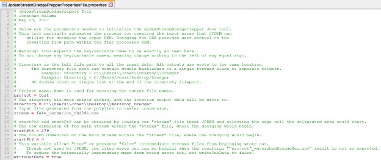
- Save the Properties file within an accessible folder.
- Launch PowerShell. Other command line methods will work, but PowerShell has the invaluable feature of drag-n-dropping full filepaths.
- Type in PowerShell the following: java -jar
- There is a space between "java" and "-jar", as well as a space after -jar
- Drag-n-drop the "JpdemStreamDredgePrepper.jar" from its full file path location.
- Add a space by clicking the spacebar.
- Drag-n-drop the "JpdemStreamDredgePrepper_DefaultProperties.properties" from its full file path location.
- Properties file filename can vary, if you renamed it after modifying the variables to fit your study area.
- PowerShell should look something like this now: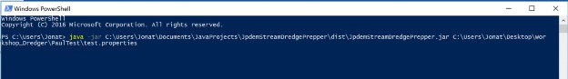
- Hit enter! If successful, you will see something like this when the tool is complete: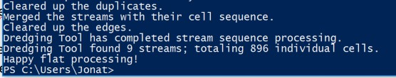
Outputs:
- The tool generates several output files. This is partly due to the tool not being 100% complete, so some files are used during development. The other reason is these files can be useful for trouble shooting problems when the final map does not match what you expected.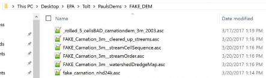
- In the above file structure example:
- projectName_watershedDredgeMap.asc: This is the file one provides to JPDEM. This file is a sorted stream network with the file structure of "sequentialCell.uniqueStream". Example: "1.1" "2.1" "3.1"
- projectName_cleared_up_streams.asc: The results of an intermediate processing step. Normally only used for code debugging.
- projectName_streamOrder.asc: The results from the tool sorting the "streams" per cell for the numbers to the right of the decimal.
- projectName_streamCellSequence.asc:
The results from the tool sorting the values per cell for the numbers to the left of the decimal.
Appendix B:
Viewing Channel Information After Flat-Processing
Assuming you have loaded a valid DEM and associated guide map, successfully run the channel cutter, and flat-process the channel-cut map, you can view how well the channel guide cells correspond to the DEM's high-flow cells.
Click the "Facc Threshold" checkbox in JPDEM's toolbar, and enter an appropriate threshold value.
The threshold image rendering is "guide-map aware", and when guide map information is available, the Facc Threshold colors the DEM map's cells as follows:
| Cell Color | >= Facc Threshold ? | Channel Guide Cell ? |
| Grayscale | NO | NO |
| Red | YES | NO |
| Dark Green | NO | YES |
| Yellow/Orange | YES | YES |